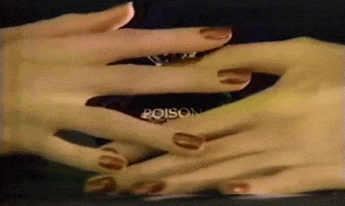

The Perfume Hall | Friday 3 June 10am-1pm

Poison resembles a magic fruit filled with belladonna, created for women who want the power of witchcraft *
An exploration of Selfridges' Perfume Hall led by writer and fragrance specialist Pascale Cumming-Benson.
This event examined the interplay between the "feel" of a scent, experienced through smell, and its "look", along with the language used to describe and sell it. In doing so, the event unwrapped the processes involved in the creation and consumption of perfume; considering how desire and aspiration perform within the space of the "Perfume Hall".
Pascale Cumming-Benson is a writer and professional fragrance specialist at Les Senteurs - London's oldest scent salon. Pascale graduated from the Royal College of Art with an MA in Critical Writing in 2014. Her thesis Osmic: An Essay on the Forms of Smell confronted how smell has been historically devalued as the mysterious and unsociable sense.
This event was part of Open Schools East's 2016 public programme.
* Toller, S. V., Part V The consumer and perfume, p203 in Dodd, G.H, Toller, S.V., Perfumery: The psychology and biology of fragrance,1988